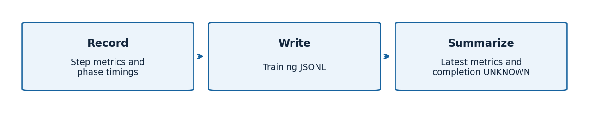

Training and reporting#
Follow the training workflow with ordinary PyTorch optimizers. Reports summarize caller-supplied metrics; they do not infer task accuracy, device synchronization or electrical energy. See parameters for reporting intervals, metric inputs and log limits.
- class TrainingMonitor(*, every=50, stream=None, log_path=None)#
Print periodic training metrics and optionally record JSONL snapshots.
Call
updateafter a training step. The first observed step of each epoch, everyeverysteps, andstep == total_stepsare emitted. Metrics are supplied and named by the caller; skipped steps do not inspect their values.log_pathmust name a file that does not already exist.- update(epoch, step, total_steps=None, **metrics)#
Emit a snapshot when due; return whether a snapshot was emitted.
- report_hardware(report, *, compilation=None)#
Render an existing preflight report; never compile a model.
- summary(*, epoch, **metrics)#
Emit caller-computed epoch metrics; never average training samples.
- phase(name)#
Time an explicitly selected host interval without device synchronization.
Nested or overlapping phases must not be summed. CUDA work can still be asynchronous; synchronize explicitly when device timing is intended.
- close()#
Record and read a CPU training log#
update emits the first step, every every steps and the last step. summary
records metrics calculated by the caller. phase records host wall time;
overlapping phases are not additive. report_hardware renders an existing
preflight report and does not compile or access a board. The context manager
calls close; a manually created monitor should also be closed. A log path
must be new. This small example uses synthetic metrics, not measured accuracy.
>>> import io, tempfile
>>> from pathlib import Path
>>> import spikepress
>>> with tempfile.TemporaryDirectory() as directory:
... path = Path(directory) / "training.jsonl"
... with spikepress.TrainingMonitor(every=2, stream=io.StringIO(), log_path=path) as monitor:
... with monitor.phase("train"):
... emitted = [monitor.update(0, step, 3, loss=loss) for step, loss in [(1, 0.9), (2, 0.6), (3, 0.4)]]
... monitor.summary(epoch=0, validation_loss=0.7)
... monitor.report_hardware({"schema": "spikepress.model_preflight.v1", "status": "CLEAR", "target": "pynq-z2"})
... report = spikepress.summarize_training_log(path)
... print(emitted, report["last_training"]["metrics"], report["last_summary"]["metrics"])
... print(report["phases"][0]["status"], report["hardware_records"], report["completion"])
[True, True, True] {'loss': 0.4} {'validation_loss': 0.7}
completed 1 UNKNOWN
The final recorded point is not necessarily the best or an average. Completion
remains UNKNOWN even after close; retain a separate completion receipt.
- summarize_training_log(path)#
Summarize recorded JSONL events without inferring run completion.
Files are limited to 16 MiB and individual lines to 1 MiB. Invalid, incomplete, or unsupported records raise ValueError with their line number. The last points are the last records in file order, not averages or maxima.

The monitor records only the metrics and phases supplied by the training loop.#
Native recurrence#
This low-level opt-in CPU function requires the matching native extension and
supports first-order gradients only. It is different from the CUDA
compile_multistep control on event layers. See execution
for dtype, shape, ABI and saturation restrictions.
- multistep(integrated, threshold, decay, weight_scale, integer_threshold, slope, grid)#
Return spikes and final state with first-order reset/STE gradients only.
With the native extension installed, use grid=False for floating recurrence;
weight_scale and integer_threshold are unused in that mode. The time axis
is dimension 1. This example backpropagates through the final state on CPU:
import torch
from spikepress.native_training import multistep
integrated = torch.tensor([[[[[-3.0]]], [[[0.0]]]]], requires_grad=True)
threshold = torch.ones((1, 1, 1, 1), requires_grad=True)
spikes, final = multistep(integrated, threshold, 0.5, None, None, 2.0, False)
final.sum().backward()
assert final.item() == -1.5
assert integrated.grad.flatten().tolist() == [0.5, 1.0]
This is a recurrence example, not a training-quality or hardware result. For integer-grid mode, supply the compatible scale and integer threshold described in the execution guide.